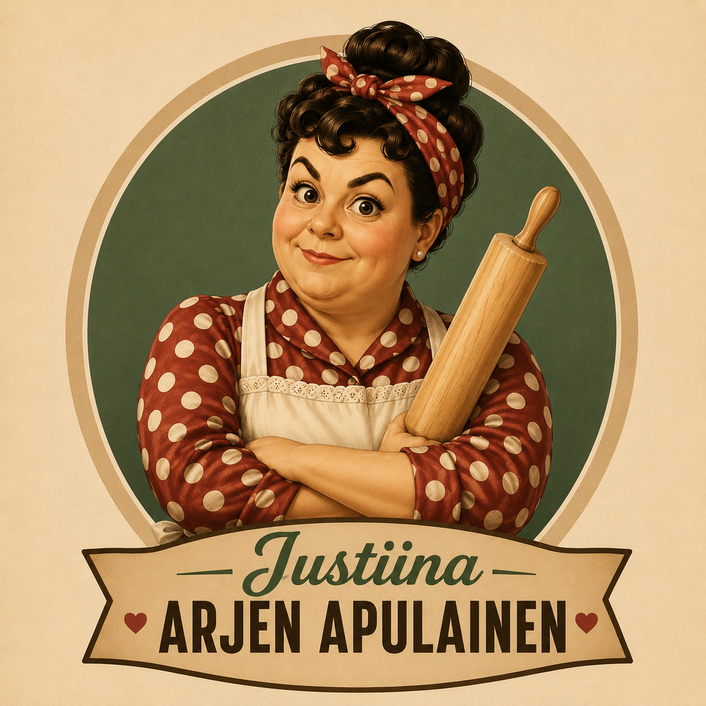

Justiinan reseptikirjasto

Onko sinulla resepti, joka ansaitsee tulla löydetyksi?
Jaa kaksi suosikkireseptiäsi Justiinalle – yhdessä kasvatamme Ziiplyn yhteistä reseptikirjastoa!

Onko sinulla resepti, joka ansaitsee tulla löydetyksi?
Jaa kaksi suosikkireseptiäsi Justiinalle – yhdessä kasvatamme Ziiplyn yhteistä reseptikirjastoa!